Alma
Scan to Care
Shaping an open brief into a full product: an app that turns skin-scan results into treatments, bookings, home care and a reason to come back.

About
Alma is a global leader in aesthetic laser and energy-based devices for skin, hair removal and pigmentation. Its flagship product, IQ, is a fast, non-invasive skin scanner that detects issues like pigmentation, wrinkles and texture. Practitioners use the results to build a personalised treatment plan.
The challenge
The brief was intentionally open. Beyond the core mechanic, the app receiving skin-scan results, matching them to treatments and booking an appointment, nothing else was defined. The only fixed anchor was the brand’s colour palette.
Propose the direction myself: decide what belongs in the experience beyond the bare minimum, and shape it into one coherent product.
The process
The core question was what added value the app should give, and what would bring customers back beyond booking. The physical treatment is only part of the journey; a whole process continues after it.
Part of that is matching customers with home-care products that extend the treatment’s effect. So we built e-commerce into the app, letting customers buy recommended products from the company itself, which also fits Alma’s partnerships with product brands.
- Detailed scan resultsElasticity, moisture, wrinkles and sensitivity, straight from the IQ scan.
- Post-treatment careDay-by-day steps after each treatment.
- Treatment history and what’s nextPast and upcoming treatments, with suggested follow-ups.
- Points and rewardsFor customers who keep coming back and buy through the app.
Inspiration
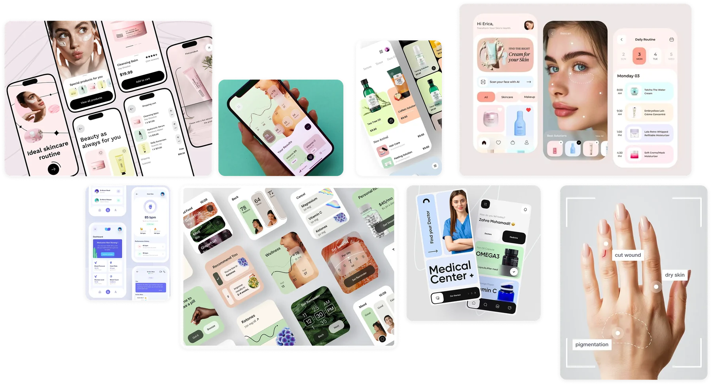
Exploring with AI
Early sketches were generated with ChatGPT, Figma Make and Claude to explore layouts and content quickly before committing to a direction.
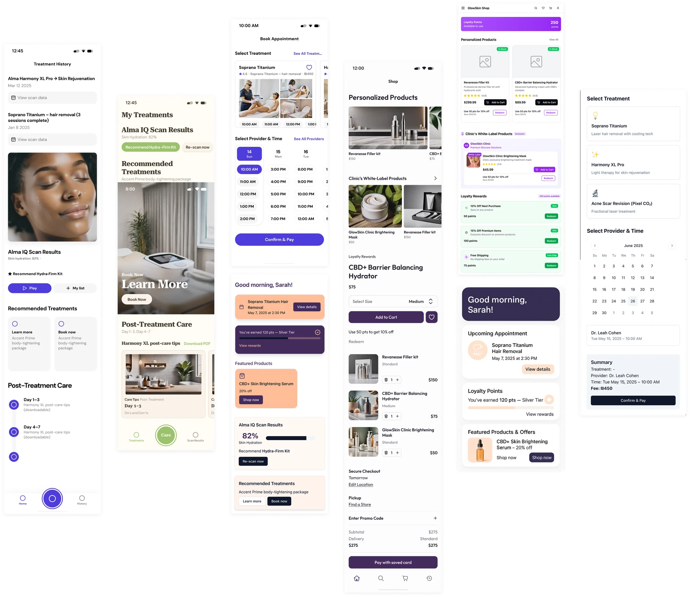
The booking flow
The flow puts the practitioner before the date. First the user picks the treatment type, then the practitioner, and only then an available date and time. There’s real value in continuity with the same practitioner, who can track the customer’s progress across treatments.
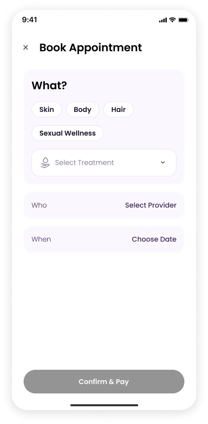
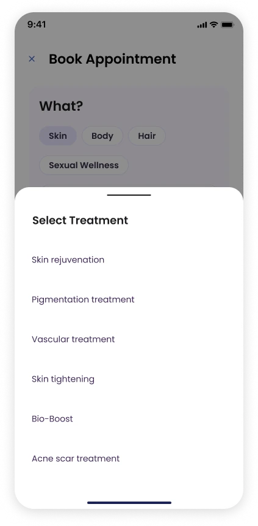
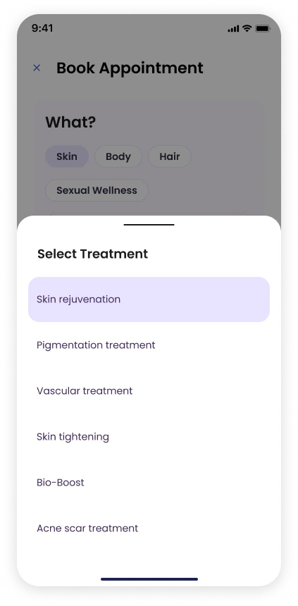
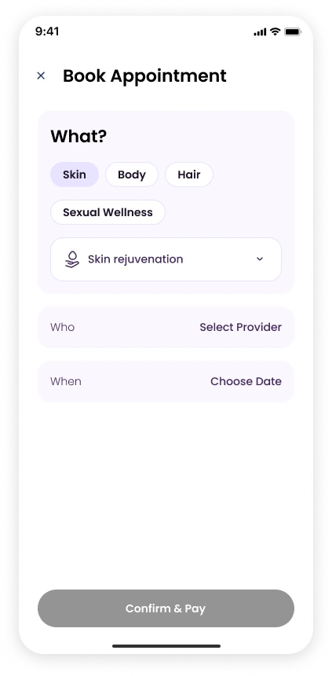
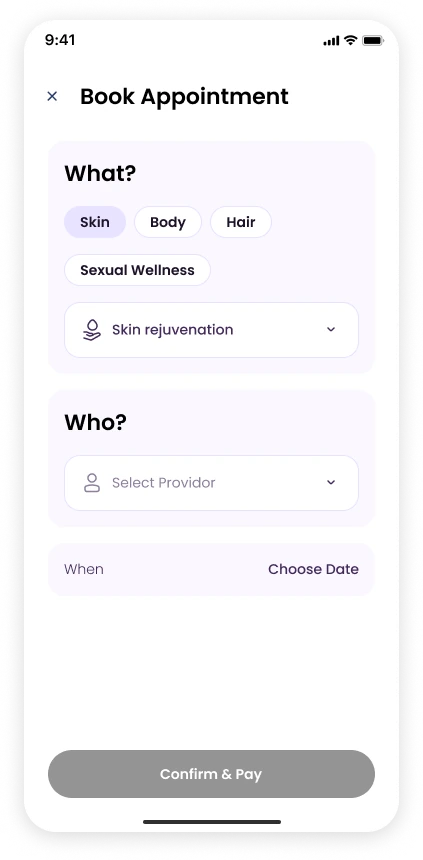
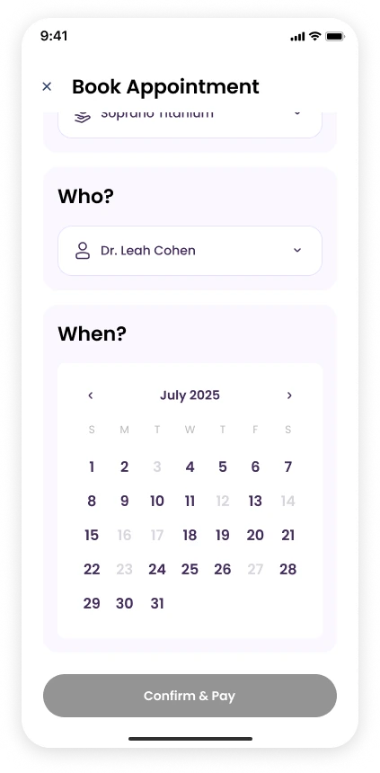
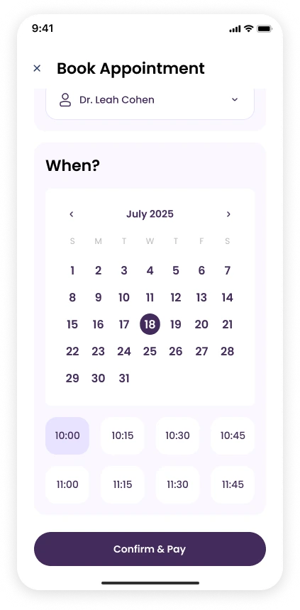
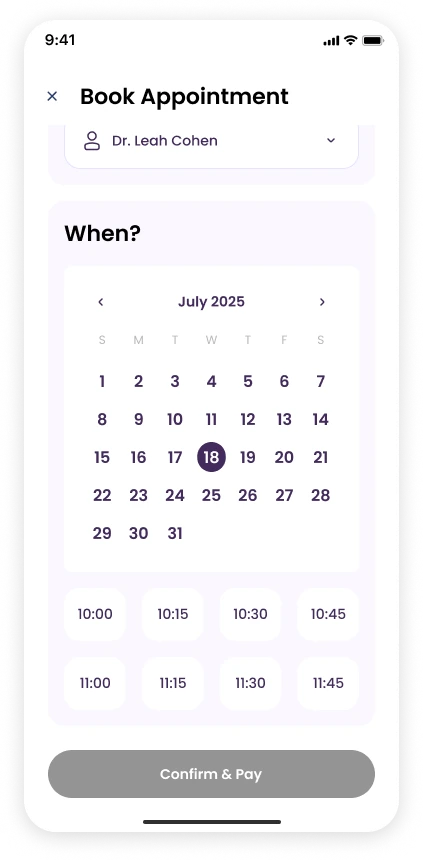
The result
Home
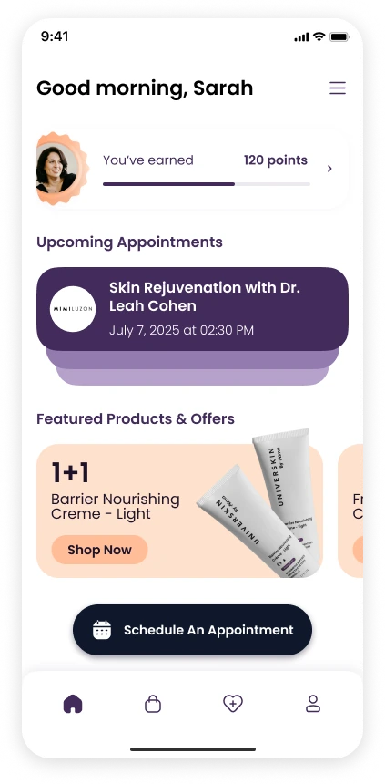
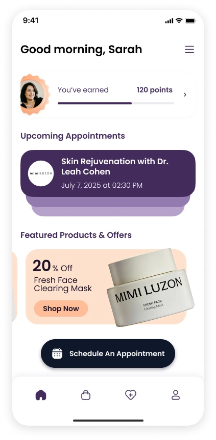
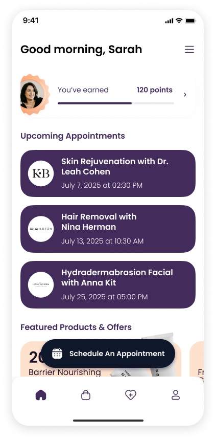
My treatments
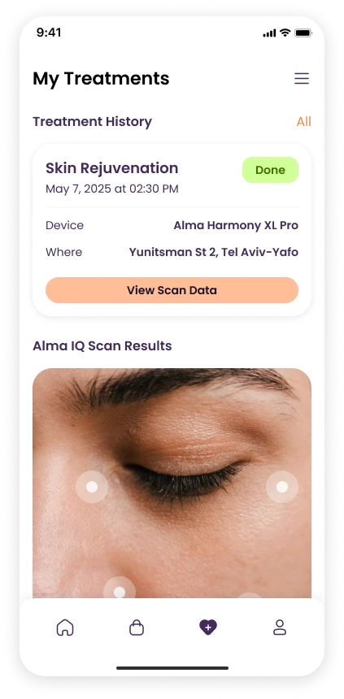
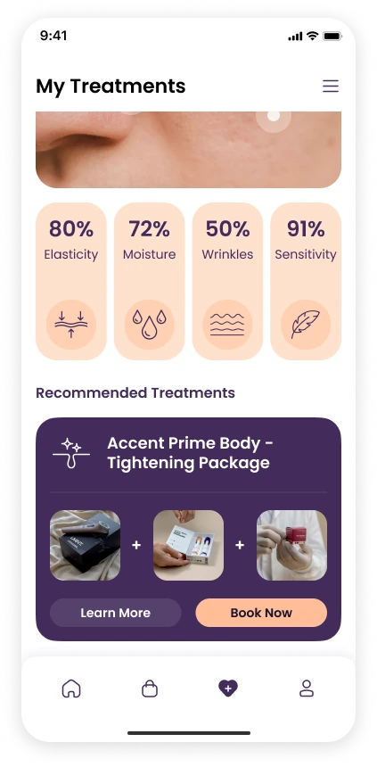
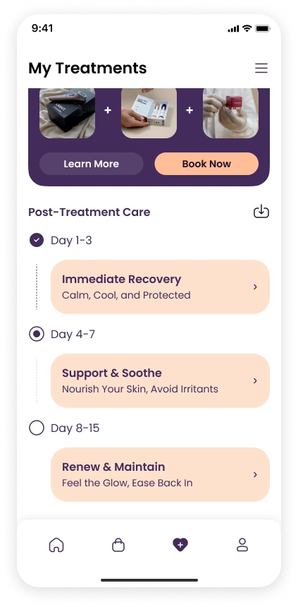
Shop
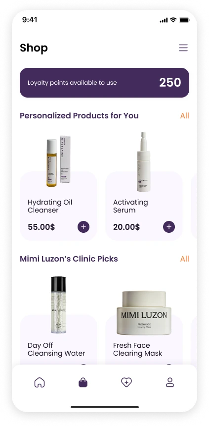
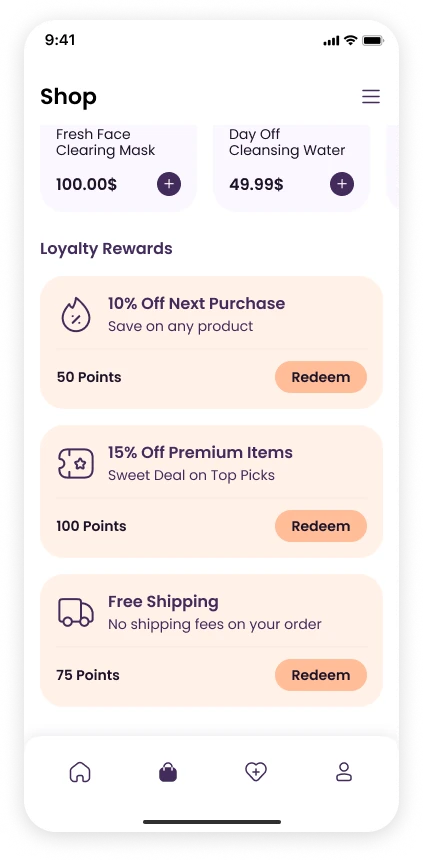